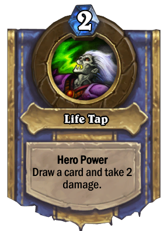

Warlock
- Gul'dan
- Demonic magic is powerful, but often carries a hefty price. Gul'dan probably knows a thing or two about that. He has access to a staggering number of demonic minions, but even though they are powerful and often cheap to summon, they always find a way to make up for the difference. Gul'dan can establish card advantage quite easily thanks to his Hero Power, which makes the old warlock a terrible foe."
- Hero Power - Life Tap: Draw a card and take 2 damage.
